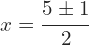
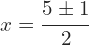

¿Quién fue Bhaskara?
Bhāskara II (1114-1185), también conocido como Bhaskara Acharia (Bhāskara-Ācārya), fue un matemático y astrónomo indio. Conocido por ser el creador de la fórmula cuadrática o resolvente.
Nació cerca de Biyada Bida ―hoy en día el Beed, en el estado de Maharashtra (sur de la India)― y se convirtió en jefe del observatorio astronómico de Ujjain.
Bhaskara representa el pico del conocimiento matemático y astronómico indio en el siglo XII. Alcanzó un conocimiento de cálculo, astronomía, los sistemas de numeración y la resolución de ecuaciones, que no había sido alcanzado en ninguna parte del mundo durante varios siglos. Sus principales trabajos fueron el Līlāvatī (sobre aritmética), Bījagaṇita (cuenta de raíces, o sea álgebra) y Siddhānta Shiromani (la joya cimera de las conclusiones, escrito en 1150).
¿Cuáles fueron sus aportes a las matemáticas?
Algunas contribuciones de Bhaskara a las matemáticas son las siguientes:
- Una demostración del teorema de Pitágoras calculando la misma área de dos maneras diferentes y después anulando términos para obtener a2+b2=c2.
- En Lilavati, soluciones de ecuaciones indeterminadas de segundo grado, tercer grado y cuarto grado.
- Soluciones de ecuaciones de segundo grado indeterminadas (del tipo ax2+b=y2).
- Soluciones enteras de ecuaciones indeterminadas lineales y de segundo grado (Kuttaka). Las reglas que da son (en efecto) las mismas que las dadas por los matemáticos europeos del Renacimiento del siglo XVII.
Bhaskara II llegó a la siguiente conclusión con respecto a la división por cero: «Uno dividido cero es igual a infinito», ya que para alcanzar la unidad se ha de recurrir siempre a un divisor fraccional más pequeño, una vez realizada la división el resto se ha de dividir siempre por un divisor más pequeño.
Procedimiento de cálculo usando la fórmula.
Para resolver ecuaciones de segundo grado del tipo ax2+bx+c, utilizamos la "Fórmula de Bhaskara", que se expresa de la siguiente manera:

Donde:
- x: es una variable desconocida.
- a: es el coeficiente cuadrático.
- b: es el coeficiente lineal.
- c: es el coeficiente constante.
Utilizar este método es muy sencillo, dado que solo debemos igualar las ecuaciones a cero y sustituir los valores de a, b, c en la fórmula general.
Al resolver una ecuación de segundo grado, pueden ocurrir 3 cosas:
- Existen 2 valores para la variable x que satisfacen la ecuación.
- Existe una única solución.
- La solución no pertenece al conjunto de los números reales.
Ejemplo de cada caso:
1)
Primero, identificamos los valores de a, b y c.
Luego, sustituimos en la fórmula general y resolvemos.

 


2)
Primero, identificamos los valores de a, b y c.

Luego, sustituimos en la fórmula general y resolvemos.
Como podemos observar, la ecuación tiene solamente una solución real.
3)
Primero, identificamos los valores de a, b y c.
Luego, sustituimos en la fórmula general y resolvemos.
Podemos llegar a la conclusión de que la ecuación no tiene solución en los números reales.